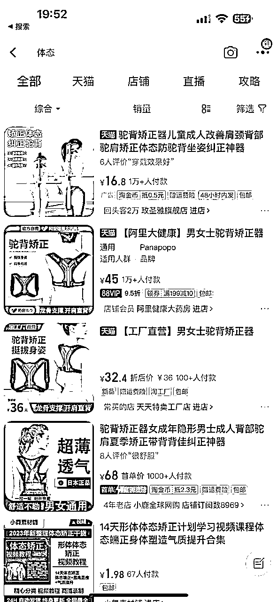

小红书无货源经验分享：利润率80%+单品揭秘！
来源：https://kds96nqxnz.feishu.cn/docx/UaxldXPH4ogRHexIo56cIeEmnGc
大家好，我是Zoey，一个奔波在各个平台做搬运混剪的崽~
在这篇分享中，我将介绍自己在小红书上做无货源的经验，希望能为你带来启发
一、数据
让我们先来看看一些具体数据。这是五月底开店的一个号，单店铺只爆了一个品，而这个品主要是一个笔记爆了带起来的。笔记和店铺数据如下：
单品给我带来了27000+的GMV,它的利润率是80%+，实际到手利润大概2.5W（如下为逸淘数据，有部分订单没有被统计到
接下来是无保留分享和复盘，enjoy~
二、选品和制作笔记
- 初入小红书时，我对平台不太熟悉。为了选品的同时熟悉平台调性，我采用了一种简单粗暴的方法：每天花三个小时刷小红书，主要是找自己打得过的同行做对标
- 大力出奇迹，在刷第三天时，我刷到了一个卖脖套的账号。因为我自己也有担心脖子前倾和富贵包的痛点，于是重点关注了这个账号的主页。发现笔记封面、内容几乎都一样，只是部分素材进行了替换，于是我的第一个对标就出现了
- 接着，我开启了搜索模式，在拼多多、淘宝、抖音和小红书上搜索关键词“脖子前倾”、“脖套”，深挖对应素材。神奇的发现，对标账号的笔记封面出自于淘宝的买家秀。我意识到买家秀也是一个可以找素材的新思路
- 接着利用小红书的搜索和推荐，继续寻找对标和素材，找到了一批对标账号，他们的统一特点：目测不是实拍，即使爆单，实拍场景也极其简单。它们的封面大多相似，笔记内容只是部分素材进行了替换
- 于是，我决定用三个号一批，先找不同同行的这种重复的封面测试，再换素材内容测试，全都是像素级模仿。测试的同时，我继续找其他品和对标账号
- 果然，第一个品大概率不会是赚钱的那个哈哈。我坚持了一周发帖，却没有出单，但我挖掘到了脖子前倾、体态这两个我觉得不错的关键词。之后，我继续用巨量算数，继续挖掘关联词
- 后来，我去购物平台搜寻这些关键词对应的商品，就这样，我后面的天选单品——十字棍，就出现了

- 继续找对标和素材，我发现，十字棍这个产品，有很多号在剪辑吴昕的一部分片段，而这些素材的播放量比其他单纯的素人图片要好。于是，我开始了找名人片段混剪的道路
- 坚持边发边测的过程，我迭代到了‘陆仙人’——这个在小红书平台本身粉丝量还不错的名人版本。由于他本身走秀素材非常多，我就开始了源源不断的替换素材发布笔记的道路。没多久，笔记就开始爆了，也就有了开头的数据，单篇笔记小眼睛452835，点赞837，累计出单400+，利润20000+

三、定价
- 做高利润，很大因素就是定价。小红书的用户主要集中在一二线城市的年轻女性。通过深入研究，我发现她们更倾向于相信一分价格一分货的观念，对价格不是特别敏感，会认为贵有贵的道理，质量应该会有不一样。因此，我在定价时参考了定价比较高，销量又不错的同行来定价，没有一味追求低价
- 这种定价策略在保持正常销量的同时，成功实现了80%以上的利润率

- 为了避免质量问题或者客户收到短信带来售后，我都是找的1688靠谱牛头厂家（1688比pdd贵，四百多单售后和客服工作量几乎没有
三、最后
- 感谢生财这个圈子，在小红书店铺航海和续航的陪伴下，经过试错和努力，我成功地在小红书上开始了盈利。不过在这过程中也遇到了一些教训，我想与大家分享：
- 首先，我遇到了笔记爆发后要开播的问题。当时发现我的账号不符合开播挂车的粉丝数要求，这让我有些手足无措。只能勉强开播并尝试通过引导观众回到我的店铺下单，虽然成功转化了一部分流量，但这也转化不是很丝滑
- 其次，我踩了一个坑，就是使用开店的账号也发布了混剪素材，结果导致了违规问题，影响了我的店铺功能。开店账号的违规行为会让店铺权益受到影响，比如一个个体店原本能绑定的三个个人专业号，开店账户违规，这三个个人专业号如果被限流或者注销了，就无法重新绑定其他号。因此，我后面放弃了这个品和店铺，而后将整体思路进行整理，并与大家分享，希望能给大家一些警示
- 在后续每天定时发笔记的过程中，设置优惠券可以获得一部分店铺流量助推
最后，希望我的经验分享能给大家带来一些启示和帮助，一起生财有术！